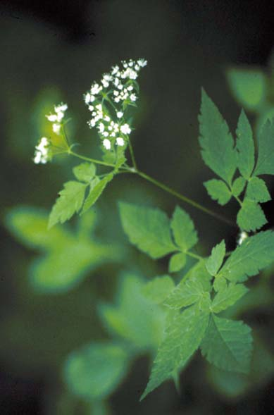
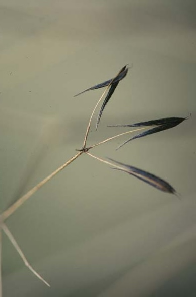

Osmoriza Claytonii
Family: Umbelliferae
Hairy Sweet Cicely
Swink/Wilhelm #3

Click to view larger photo
FLOWERING: May to early June
SEED TIMING: Late June to August
HABITAT: Moist woods
DIAGNOSTIC FEATURES: 1.5 to 3 feet high. Leaves alternate, fern-like, divided into blunt-toothed or lobed leaflets which emit a licorice-like odor when bruised. Stems very hairy. Sparse, flat-topped clusters of small white flowers.
TO PICK: Pods are tapered, blackish, covered with stiff, clinging hairs. Strip or take entire head.